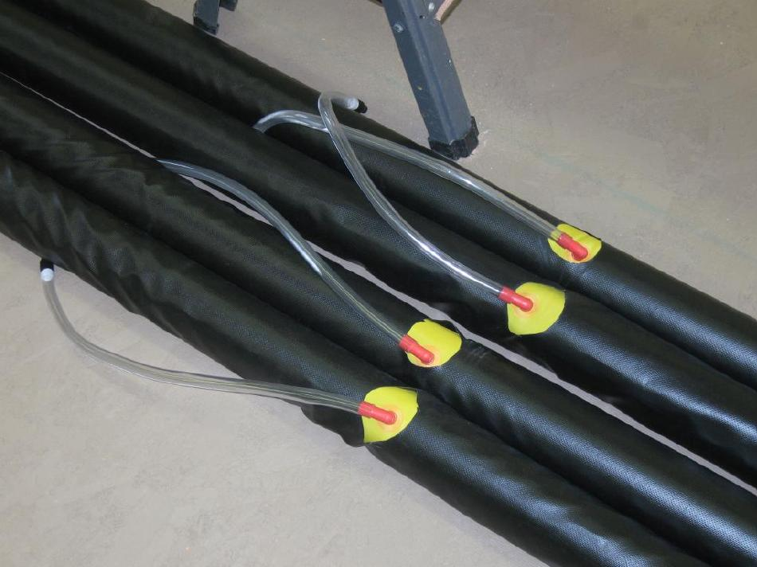

| Sonnet ( Sponson / Sleeves) | Menu Last Page Next Page |
|

Sponson sleeves contain and protect the inflatable sponsons on the Sonnet kayaks. The sleeves are made from 10oz PVC and are glued to the inside of the PVC hull skin of the inflatable / folding kayaks. The removable sponsons are inserted into the sleeves and inflated to provide shape to the boats. Instructions for making the sponson sleeves and gluing them to the hull skin are provided in this section of the manual.
|
|